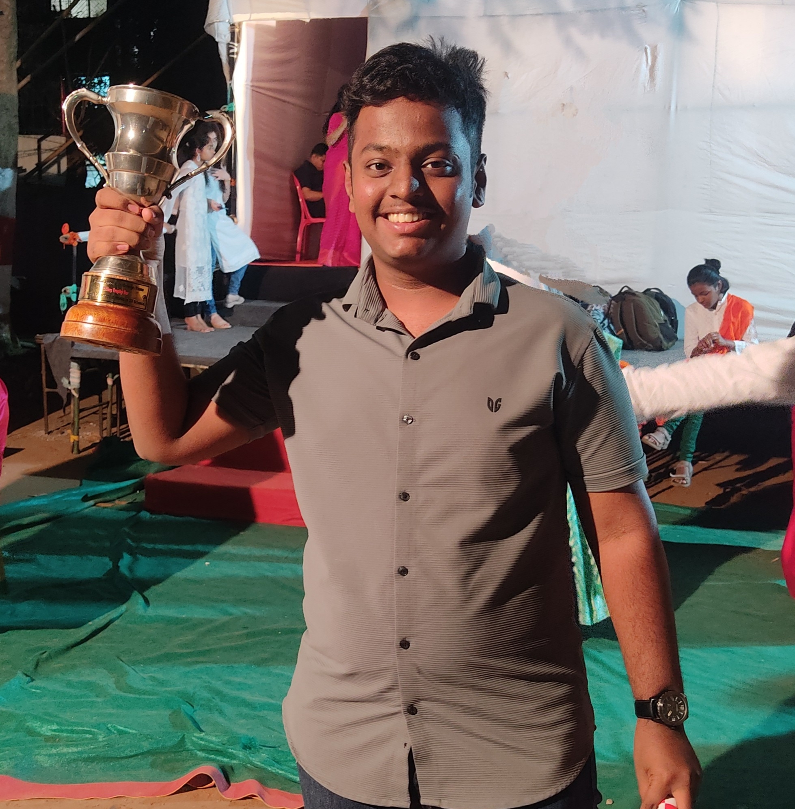

- Summary/Objective

My Name is Aarya Tambde. I am currently in second year, pursuing a Bachelor's in Technology degree in IT from Vidyalankar Institute of Technology. I have a keen interest in learning new things. I am well versed in few coding languages(C,Java,HTML). I wish to keep upgrading myself.
- Education Details
- Bachelors of Technology(B.Tech) Information Technology.
2023-2027
Vidyalankar Institute of Technology.
- HSC(12th)
2023
SES High School and Junior College
Scored - 74%
View Result
- SSC(10th)
2021
SES High School and Junior College
Scored - 87%
View Result
- Skills/Area of Expertise
- Good at managing time and workload.
- Great Communication skills and can work in a collaborative environment.
- Skilled in typing
(Highest WPM - 89 with an accuracy of 95%)
- Good at Decision Making.
- Proficient in the following programming languages:
- C
- Java
- HTML
- Projects
- Developed a working Smart City model.
- Developed a fully functional Smart Dustbin that works on Ultrasonic sensors and Arduino
- Developed a Clutch lock for Bikes.
- Contact Me
Hit me Up!
{kind=link}
{kind=link}